Case file 03 · B2B developer tools · Product concept
Pulse.
A MetricKit workspace that turns a slow release into an investigation an engineer can act on. The design work here is mostly structure: what the product is about, and what every screen hangs off.
- The problem
- When an app gets slower after a release, MetricKit has the data. But the engineer still pieces together releases, devices, OS versions, diagnostics and call stacks by hand.
- What I designed
- A workspace built around the regression, not the metric. Each regression becomes an investigation with its impact, evidence and next step in one place.
- The value
- “Something got slower” → “here’s where to look”in one workspace, without pretending to know the root cause.
- My role
- RoleProduct designerScopeStrategy, IA, UX, UITypeProduct conceptPlatformmacOS dev tool
Not affiliated with or endorsed by Apple. MetricKit is Apple’s framework; Pulse is my design on top of it.
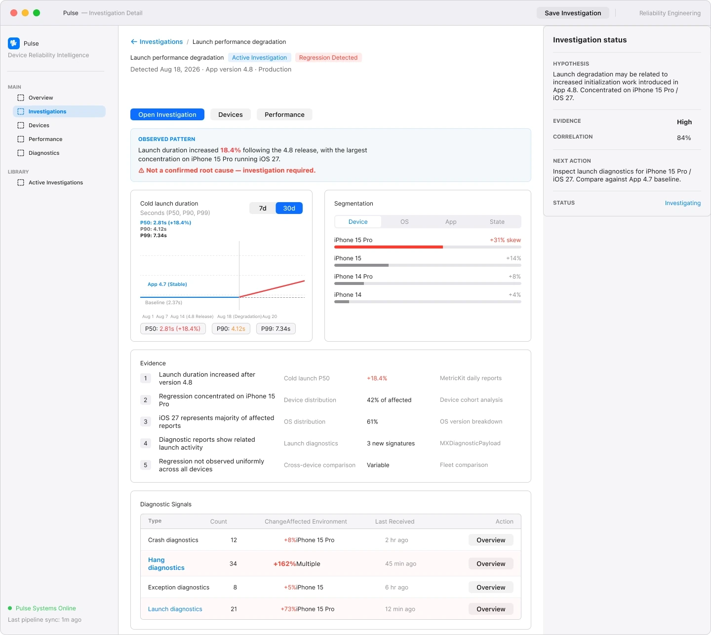
01 · The problem
The data existed. The investigation didn’t.
MetricKit already reports launch times, hangs, crashes, energy and disk writes from real devices. What it doesn’t do is tell an engineer which of those numbers matter after a release, and why.
Seven pieces of context, connected by hand
The engineer is the thing connecting them. Every investigation starts from zero.
One sequence, in one place
- 1SignalWhat changed in this release
- 2ImpactHow much, and how many sessions
- 3Affected populationWhich devices, OS and app versions
- 4Diagnostic evidenceTraces and call stacks that support it
- 5InvestigationAn owner, a status and a next action
A metric isn’t a problem. A regression is.
A launch time of 2.81s means nothing on its own. It matters when you can say what changed, when, by how much, who is affected and where to look. So the regression became the main object of the product, and every metric became evidence for it.
Apple’s framework that collects performance and diagnostic data from apps on real users’ devices and hands it to developers as regular reports.
Who Pulse is foriOS engineers and reliability teams who need to find out why a release got slower or less stable.
02 · The reframe
I changed what the product is about.
Most performance tools are organised by metric. I organised Pulse by regression. That one choice set the navigation, the first screen and the words on every page.
Seven tabs, and the engineer joins them up
- Launch timechart
- Hangschart
- Crasheschart
- Energychart
- Disk writeschart
- Diagnosticslist
- Call stackslist
Which release? Which devices? Is it new? Every one of those is answered by hand.
One thing to open, with everything attached
- Release 4.8what changed
- Regression: cold launch +18.4%severity, sessions
- Investigationowner, status, hypothesis
- Segments: device, OS, app versionevidence
- Trend and percentilesevidence
- Diagnostics and call stackevidence
Metrics don’t disappear. They move one level down and become evidence for a regression.
03 · Key insight
Engineers don’t need more charts. They need the regression, the evidence and the next step in one place, with an honest word on how sure we are.
04 · Key decisions
Three decisions that shaped the product.
How might we start from what changed, not from every metric?
1. Investigations, not dashboards
The first screen lists what regressed in the latest release, ranked by severity and sessions affected, with a note on whether evidence exists. Metrics moved one level down, as supporting evidence.
Trade-off: Engineers who like browsing raw metrics have one more click. I accepted that, because a wall of charts makes everyone redo the same triage.
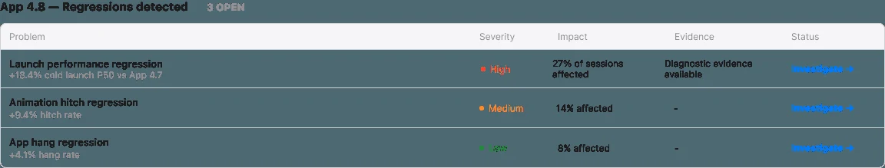
How might we help without overclaiming?
2. Show how sure we are, never overclaim
Every investigation states the observed pattern, a hypothesis, evidence strength and correlation, and says plainly: not a confirmed root cause.
Trade-off: There’s no single neat answer. But a wrong root cause sends an engineer the wrong way, which costs more than an honest maybe.
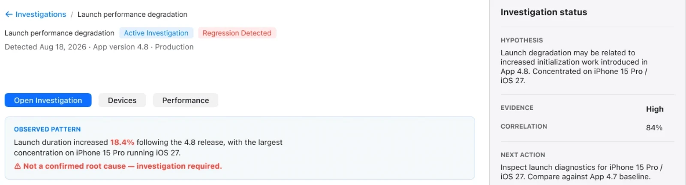
How might we make the work outlast one session?
3. Make the investigation persist
An investigation has an owner, a status and a history, so it lasts beyond one session and can be handed over to someone else.
Trade-off: It adds workflow on top of analysis. I kept it to three states, investigating, monitoring and resolved, so it doesn’t turn into a ticketing tool.
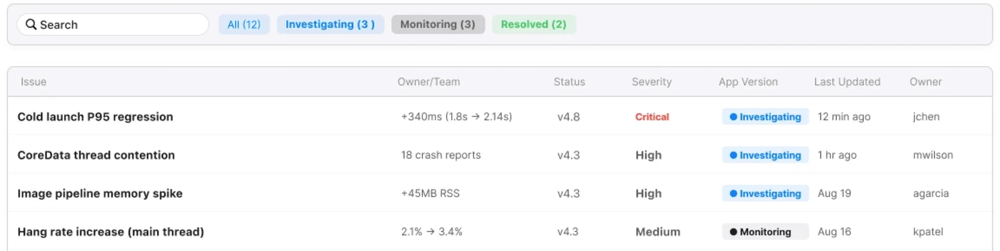
05 · The experience
One regression, start to finish.
App 4.8 ships and cold launch gets 18.4% slower. This is how an engineer goes from noticing it to knowing where to look.
Step 1
Release health
The engineer opens Pulse and sees what regressed in App 4.8, not a grid of charts. The launch regression is first because it’s the most severe and touches the most sessions.
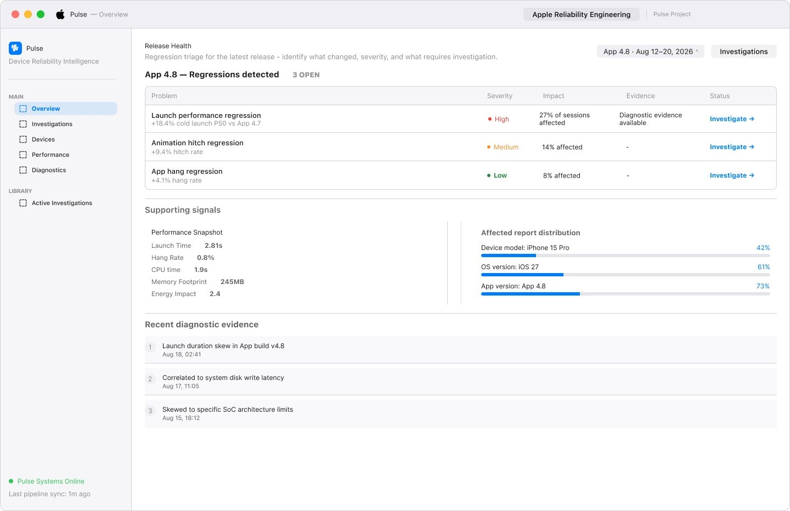
Step 2
One page holds the whole regression
The pattern, the trend, the segments, the evidence and the signals behind it, with the current hypothesis pinned on the right.
Step 3
Is it everywhere or concentrated?
The device view answers that: iPhone 15 Pro has the slowest launch and the highest hang rate.
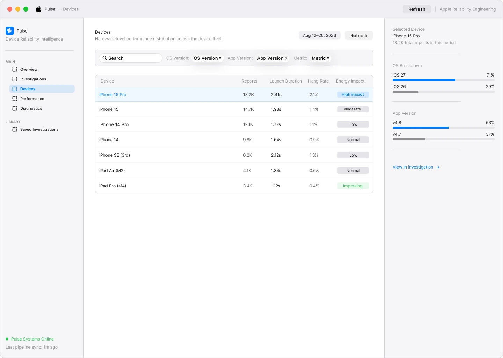
Step 4
The slowdown lines up with the release
The trend shows the change starts with 4.8, and what else moved with it: hangs, CPU, memory and disk writes.
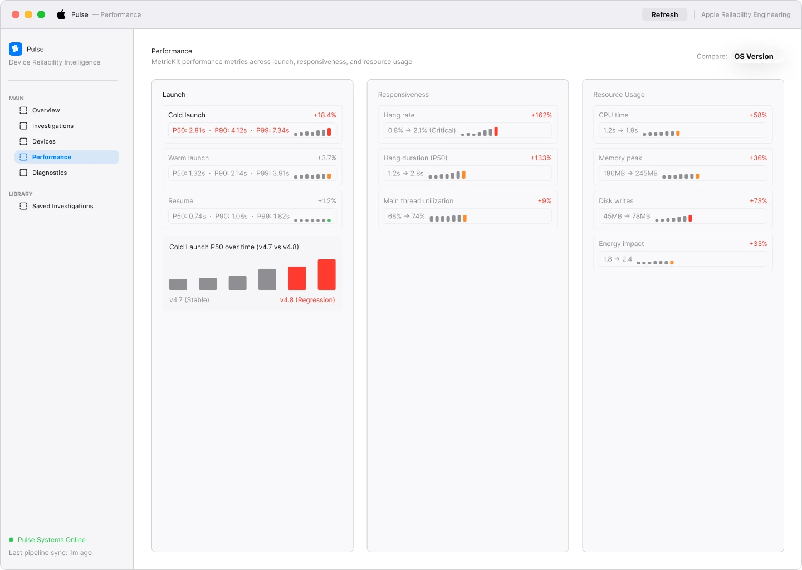
Step 5
Where the time went
Application init grew 67%, and the call stack points at Core Data setup and migration running on the main thread at launch.
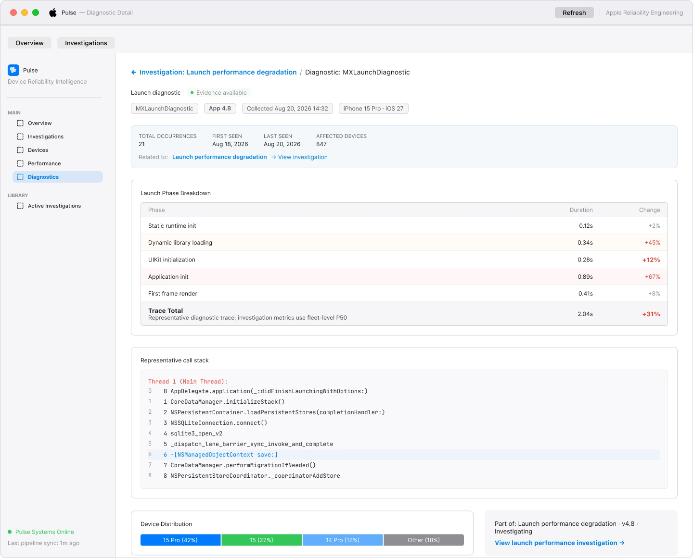
Step 6
The work doesn’t end when the tab closes
Investigations keep an owner and a status, so the team can see what’s open, what’s being watched and what’s fixed.
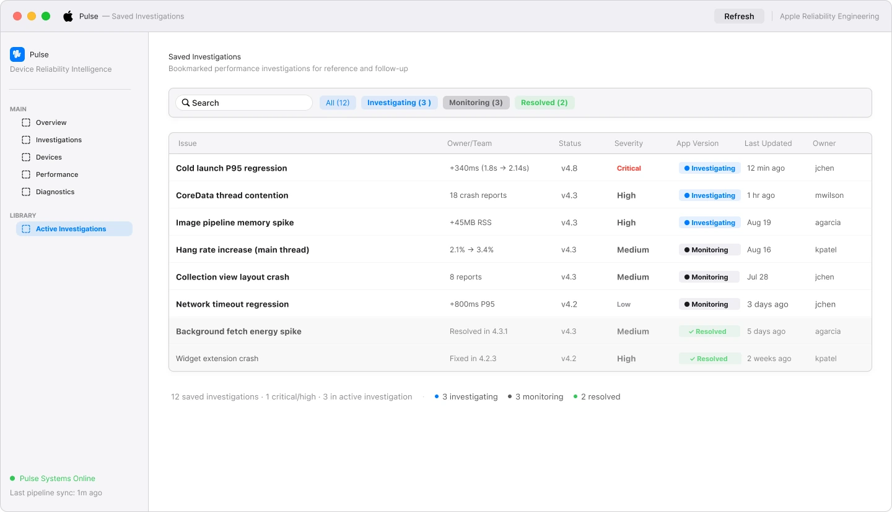
Also in the workspace
Two supporting views, for when the engineer starts from a list instead of a release.
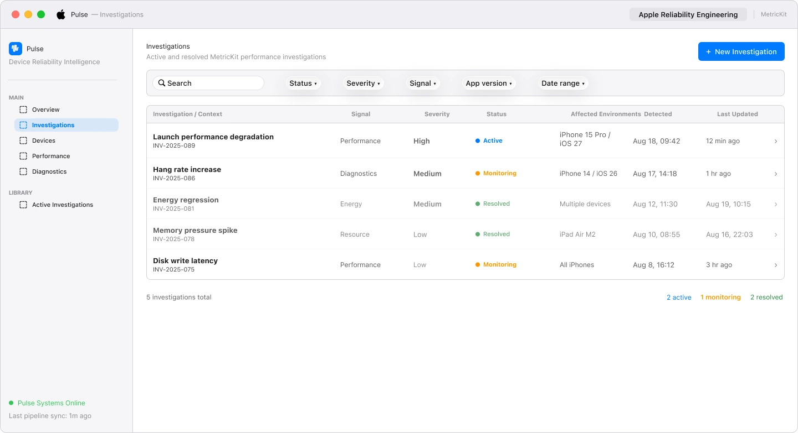
Investigations. Every regression as a trackable item, filterable by signal, severity and app version.
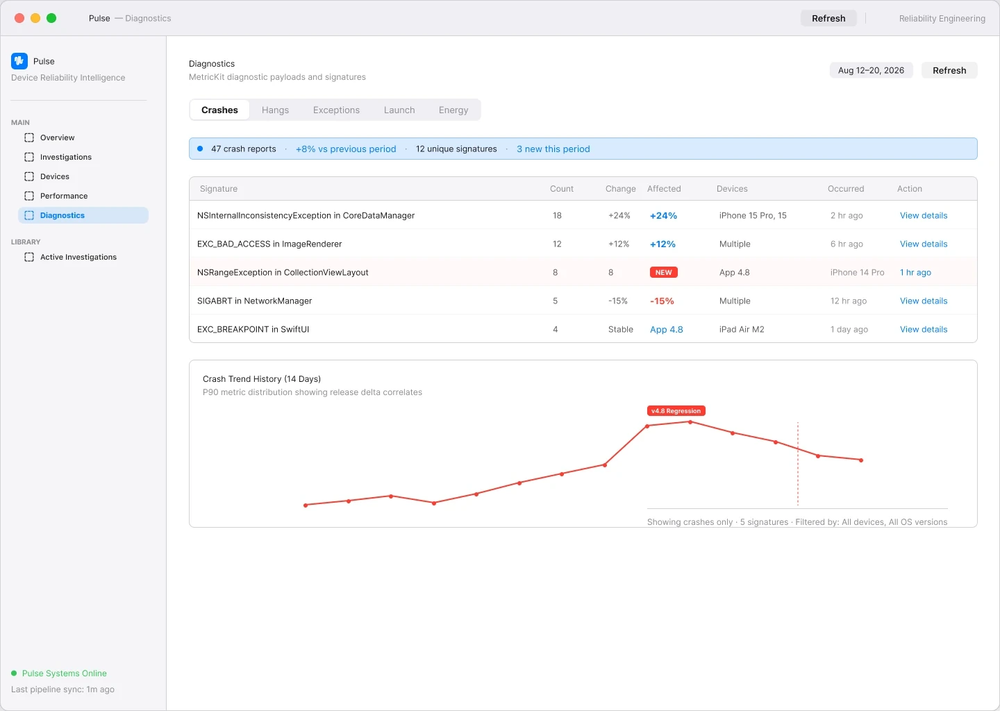
Diagnostics. Crash, hang and launch signatures, with what’s new this period and the release it started in.
06 · Value
What it changes for an engineer.
This is a product concept, so these are design goals, not measured results.
07 · Reflections
What this project taught me.
The object model is the design
Choosing the regression as the main object decided the navigation, the screens and the language.
Certainty is part of the UI
“Not a confirmed root cause” matters as much as any chart on the page.
Experts still need a first screen
Even engineers want to know what changed before they want to explore.
- Talk to iOS engineers about how they triage a regression today.
- Test whether “84% correlation” gets read as proof.
- Test the hand-off from a diagnostic to Xcode and Instruments.